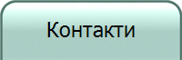
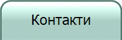

Нашата компания предлага транспортни услуги в цяла Европа и оперира по
множество маршрути.
Ето няколко примера:
Маршрут между Берлин и Париж - Това е един
от най-популярните маршрути, който обслужваме. Той включва превоз на стоки
от германската столица до френската и обратно. Този маршрут е особено важен
за клиентите ни, които имат бизнеси в двете големи града.
Маршрут между София и Рим - Това е друг
маршрут, който обслужваме често. Той е насочен към клиентите ни, които имат
нужда от транспорт на стоки между Източна и Западна Европа. Този маршрут
минава през Гърция, Италия и други държави и предоставя достъп до няколко
големи града.
Маршрут между Варна и Стокхолм - Това е
маршрутът, който обслужваме за клиентите ни, които имат бизнес в
Скандинавия. Това е маршрутът, който минава през редица европейски държави и
големи градове, като например Копенхаген и Осло. Тези са само някои от
маршрутите, по които оперираме в Европа.
Нашата компания предлага множество други маршрути и транспортни услуги, за
да отговорим на нуждите на всеки клиент. Може да си изберете и маршрут
според вашите нужди от картата по-долу: